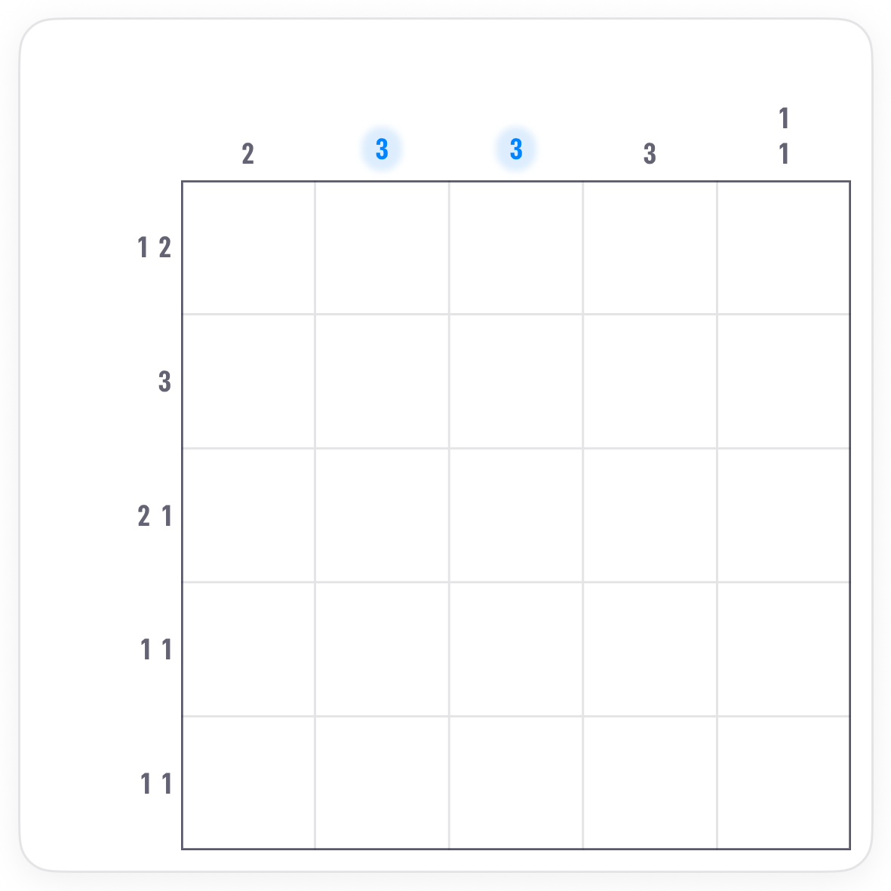
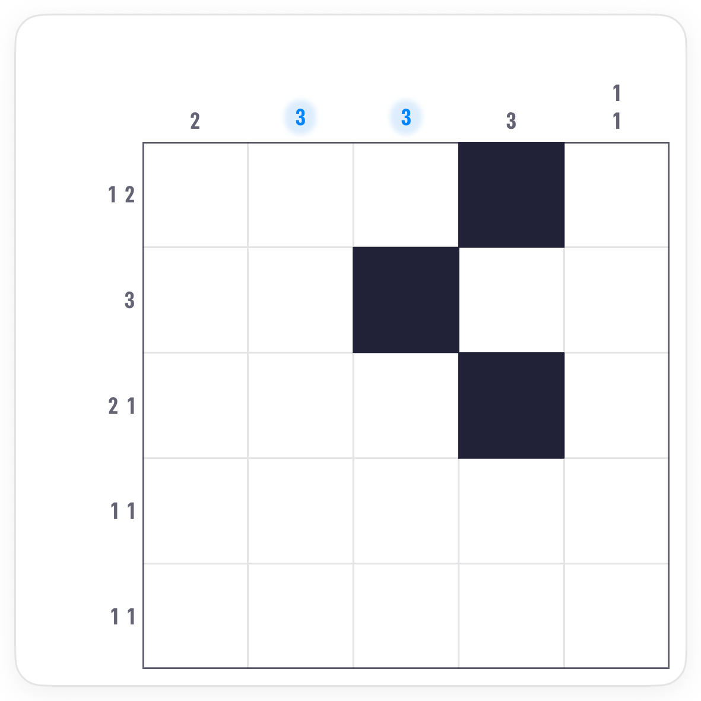
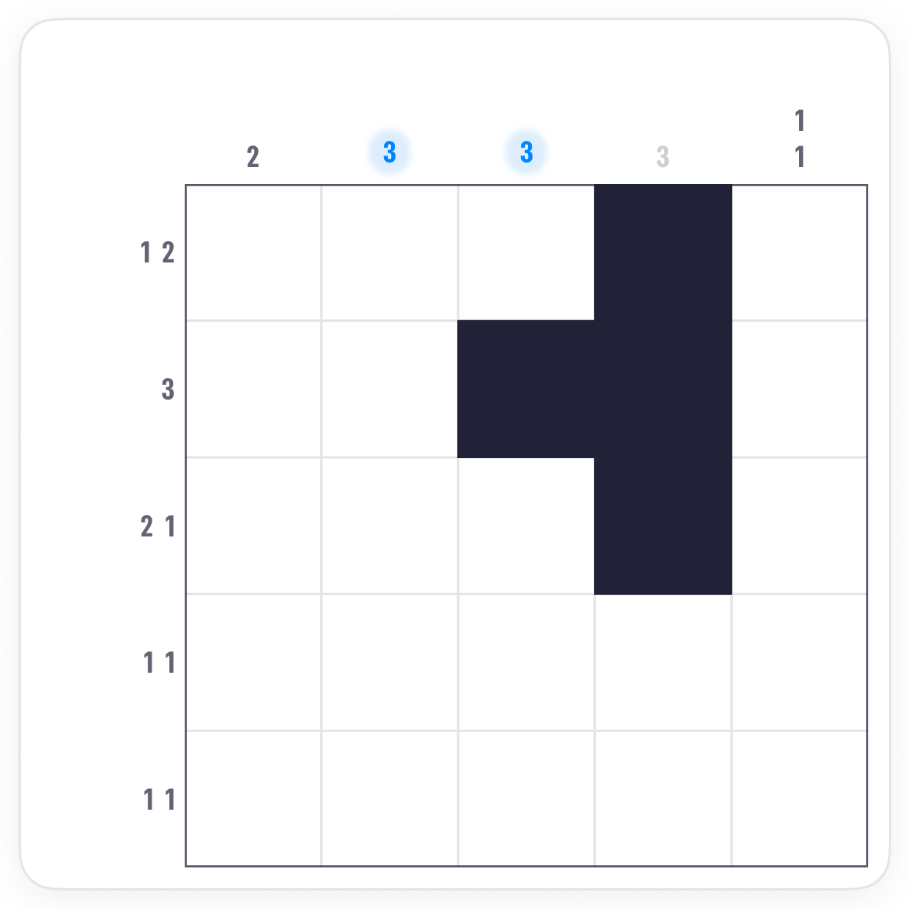
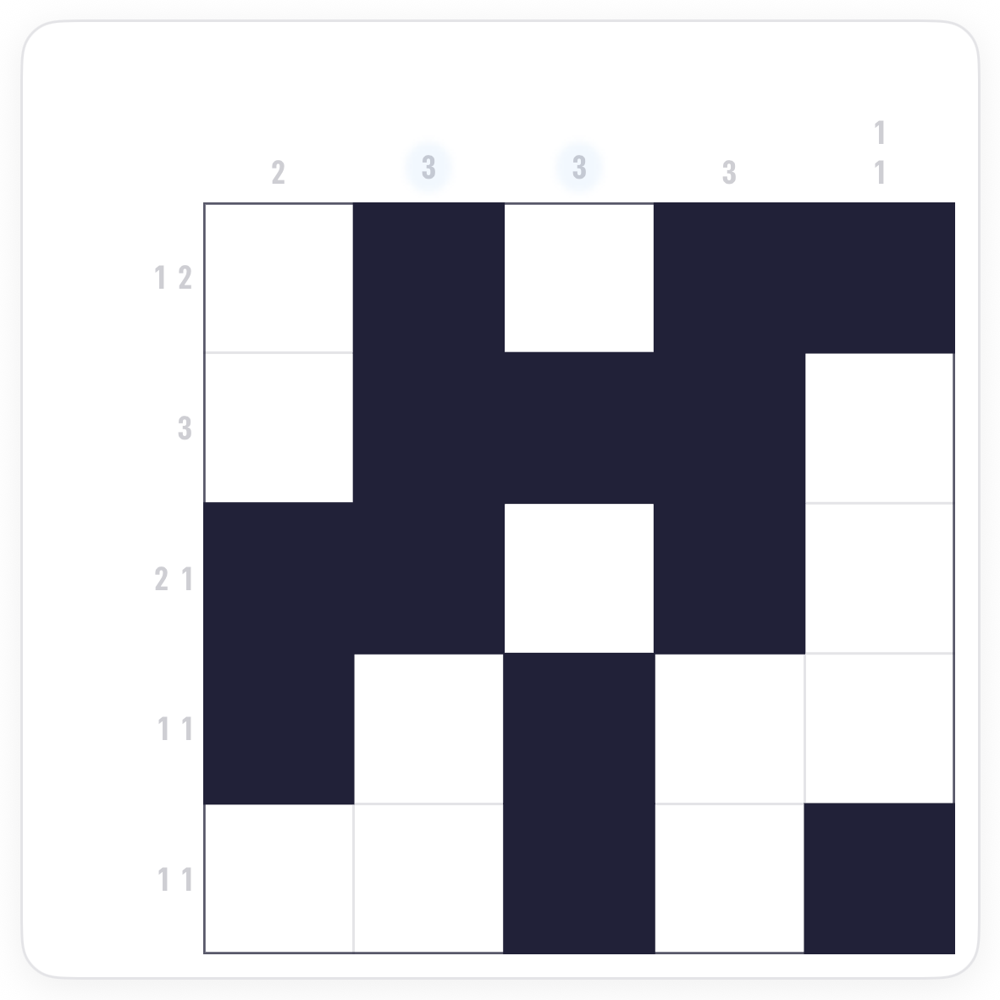

How to play Fog Nonograms.
Fog is Nonograms with some of the clues hazed over. A hazy clue still tells you how many squares in that line are filled, but not how they are grouped. The clear clues around it do the rest.
The board.
The same grid and edge clues as a classic Nonogram, except that some clues are shown in blue: those are hazy. A hazy 3 means three filled squares in that line, in any arrangement: all together, or split up. It never says which.

The rule.
Everything else is unchanged. The board has one solution, and the clear lines that cross a hazy one are what pin it down.
Work the clear lines first.
Ignore the haze to begin with. The clear clues give the same starts as any Nonogram: lines that fill exactly, and runs long enough to overlap themselves.


Then count the hazy ones.
A hazy clue becomes useful once the clear lines have filled some of its squares. Count what is filled against the total: when they match, X the rest of the line. When the empties left equal what is still missing, fill them all.

Common questions.
Does a hazy clue ever say how the squares are grouped?
No. A hazy 3 could be three in a row or three singles. Only the crossing lines can tell you.
Can a whole row and a whole column both be hazy?
Yes, and the squares where they cross are pinned by the totals and by everything else around them. Every Fog board still has a single solution.